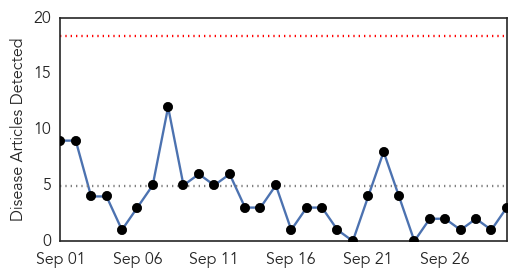
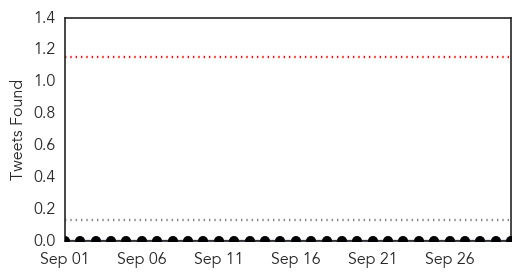
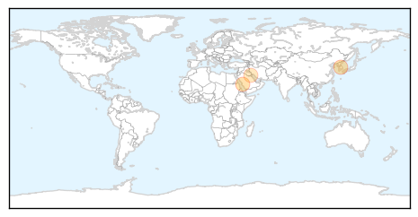
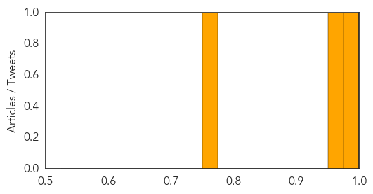

Cholera
30-Day Web Trend
0 alerts, 0 warnings

30-Day Twitter Trend
0 alerts, 0 warnings

Article Locations

Article Confidences

Top Articles:
Top Tweets:
- 0.866
- RT: working against cholera last week. lets stop transmission and end cholera deaths! @SecGTFCC http://t.c…
- 0.680
- MarioJoseph pale sou Wikileaks, jistis pou viktim cholera, fomasyon avoka progresis aswe a, 8h Teletimoun
- 0.522
- RT: Haiti Cholera Outbreak: the Cost of Global Peacekeeping http://t.co/RWo1tTH414 @…
MERS
30-Day Web Trend
0 alerts, 0 warnings

30-Day Twitter Trend
0 alerts, 0 warnings

Article Locations
Article Confidences
Top Articles:
Top Tweets:
-
No tweets found for Sep 30, 2015